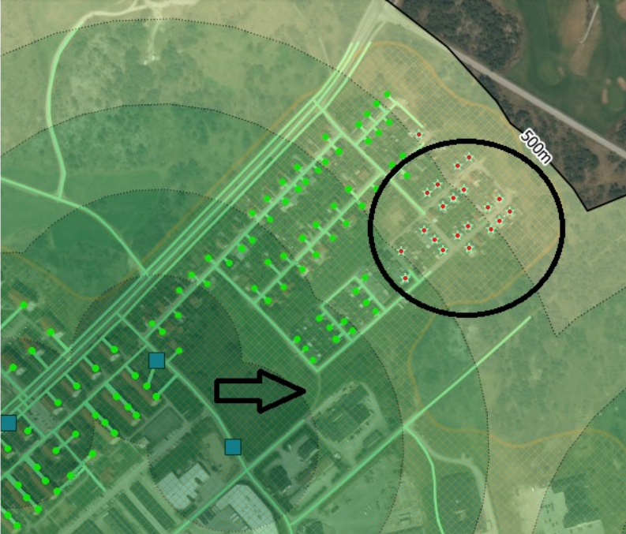

Calculation Methodology of Indicator 11.2.1
Version 1.0
James Westwood, Antonio Felton, Paige Hunter and Nathan Shaw.
Introduction
Our team has calculated data for transport accessibility across the UK following, as closely as we could, the method in the UN Metadata for the SDG indicator 11.2.1.
The following is a write up of the methodology we employed to make these calculations. In this methodology writeup we aim to accurately reflect the method used in version 1.0 of our project; read more about versions below in the section “Project Versions”.
Acknowledgement
The main support for this project on both methodology and finding appropriate data sources has come from the geospatial department, in particular Musa Chirikeni, to whom we are very grateful. Other help has come from Michael Hodge who laid out the initial method we might approach in Python, and from the SDG data team who have been supportive data end users. We also thank Mark Simons who contributed to data management code in early 2022.
Background
The statistics calculated for this project are to be used as an indicator of the UK’s progress on target 11.2 of the Sustainable Development Goals (SDGs). The SDGs are a set of 17 Goals which 193 Member states signed up to in order to coordinate efforts on more sustainable and inclusive national development. The goals cover areas such as poverty, hunger, equality and the environment. Goal 11, which the indicator we are calculating for falls under, is concerned with Sustainable Cities. The data our team produces will be available on the UK data platform for the SDG indicators, specifically on this page.
Project history
The project was initiated in late 2019 by James Westwood with some initial help from the UK SDG data team and Michael Hodge from the Data Science Campus, who provided guidance on the tech that would need to be used and a rough step-by-step calculation process.
Project Versions
The project is managed using version control on the Github platform. One feature of the version controlling using Github is that we can make releases. At the time of writing we have not made any releases of the code, but when we feel that all features to calculate the statistics required by the end user have been written into our code, we will release version 1.0.
Each version has a project board, wherein we group the issues describing the work that needs to be done to develop each feature required. Project boards are hosted on Github.
| Version | Focus | Example features |
| 1.0 | Fully working reproducible calculation of transport availability across the UK |
|
| 1.1 | Quality Assurance Phase |
|
| 1.2 | Enhanced functions and calculation | Focus on enhancements to the calculation
- Improve existing functions, making them more generic and robust - Look into improving geographical accuracy with more granular calculations - Improve the analysis with more disaggregations. |
| 1.3 | Optimise Computation | Focus on enhancements to the functioning of the code:
|
Calculation process
Process diagram
{kind=link}
Main method of calculation
The key step of calculation is a spatial join between geolocated urban population data and public transport service areas. A discussion of how each component of that join was calculated from their component parts follows.
Geocoding the population data
The questions we are trying to answer in this analysis is “What proportion of people in the UK have access to public transport access points from their home?”. And then the same question for people in each age, sex and disability category.
To make the calculation as accurate as possible, we sourced the most granularly geolocated population data possible. Ideally, this would have been right down to the individual place of living (house/flat etc.) but such granularity is not available publicly, as it would be disclosive of individuals’ living situations. The most granular level published that we are currently aware of is the “output area” (OA) data, which derives from the census.
Output areas (more fully defined and discussed in the data section of this methodology write up) are a conglomerate of the postcodes. Those postcodes are joined together on the basis that they are:
- Adjacent
- Of the same urban/rural classification
In order to calculate the distance from the place any person lives, to a public transport access node (station or stop) we need a point-geometry for their residence. As we cannot geolocate individual residencies, we used an approximation in the form of population weighted centroids (PWCs).
PWCs are a population-weighted location (x,y point) at which is a geospatial mean of the locations of all residences in that output area. The PWC, while extremely helpful in giving us a geospatial point to define where the population of any output area lives, is an approximation and is only used due to limitations in our data.
Joining the data
Population weighted centroid (PWC) data is geolocated with x,y coordinates and has a common data column with the output area data (output area code, “OA11CD”) so a table join can be performed on those datasets. Then the entire population of any output area is approximated to live at the centroid.
Limitations and improvements
Our team recognises that PWCs do not accurately represent the location of any individual’s place of residence and we intend to research methods of making calculations at even more granular levels, such as postcodes or smaller. Currently however we agreed with the our data end user and the geospatial department that the method to be used for version 1.0 will use the described approximation to geolocate the population.
Delimitation of urban areas
As Target 11 is concerned with sustainable urban environments, we ultimately had to select only urban areas and exclude rural areas from our analysis. Urban areas are defined as Ordnance Survey mapping that have resident populations above 10,000 people (2011 Census) and the methodology is available here. The urban/rural lookup data was sourced from ONS’s Geography Portal and it provides a classification of each output area as either urban or rural categories which are further subdivided as follows.
| Classification | Description | Code |
| Urban | Major Conurbation | A1 |
| Urban | Minor Conurbation | B1 |
| Urban | City and Town | C1 |
| Urban | City and Town in a Sparse Setting | C2 |
| Rural | Town and Fringe | D1 |
| Rural | Town and Fringe in a Sparse Setting | D2 |
| Rural | Village | E1 |
| Rural | Village in a Sparse Setting | E2 |
| Rural | Hamlets and Isolated Dwellings | F1 |
| Rural | Hamlets and Isolated Dwellings in a Sparse Setting | F2 |
In our calculation we group A1, B1, C1 and C2 as urban and any other code as rural.
Joining the data
The population table for the whole nation was joined onto the table with the urban/rural classification for each output area on the output area code “OA11CD”, hence bringing in the classification into the population data. Every OA and associated PWC is therefore categorised as either urban or rural. Later we use this classification to filter the data, and disaggregate our analysis. For the SDG analysis we remove the OAs classified as rural from our analysis, but we can choose to include them to expose transport availability in rural areas too.
Computation of service areas
As described in the methodology of the UN Metadata for this indicator, public transport service areas had to be calculated. Two methods to calculate service areas are described in the methodology:
1) using a Euclidean buffer to create polygon, and
2) to create a network/path calculation.
Our team opted for the Euclidean buffer method for a number of reasons:
- We followed advice from the ONS Geospatial department that the simpler buffering method would be adequate for our needs
- Computationally Euclidean is would be much less resource intensive and does not require distributed compute power, whereas a network calculation would require scaled compute power.
- Other countries (such as Estonia, Norway and others) used the Euclidean buffer method and published their results. Our results will be more comparable with theirs
- Research shows that the network enquiry requires a complete path network, (as pointed out by Sweden in their write up, see section “Result from the network distance calculations”)
Euclidean buffering methodology
We use Geopandas and for all geospatial operations in our analysis and the buffering operation is actually carried out by the Shapely object.buffer() function. This operation takes a geospatial point, and uses a radius of a given length to creates a polygon around the point which approximates a circle. The standard buffering of a point yields a polygon with 99.8% of the area of the circular disk it approximates.
[
Figure 1: Illustration of the process of buffering a geospatial Point
The resulting geospatial polygons are then joined and can be used for further calculations.

Figure 2: Process of combining polygons to create the service area
Notes on the network query method
A network query would be calculated by taking paths of a specified length (500m or 1km) in every direction from a specified point; for this project that point would be a transport stop or station. Following these paths for the specified distance would create many end points. Finally end points are joined to create a perimeter, within which lies the service area.
[
Figure 3: An example visualisation of a network distance calculation, taken from the Swedish methodology write up at https://www.efgs.info/11-2-1-sweden/. The image shows the stops in blue, surrounded by the Euclidean buffer, shaded in green and a 500m limit shown.
Calculation of population within service areas
With the service areas calculated, the population that resides within a service area is calculated by a two stage process:
- A points in polygons enquiry which then filters the PWCs, so that the data set contains only those which are within the service areas,
- The population figure (number of individuals) associated with each PWC is summed, meaning that only the population within the service areas is counted as the population outside of the service areas was filtered out at stage 1.
- The proportion of the population inside a service area is calculated as a proportion of the total population. Currently for version 1.0, this is carried out at Local Authority (LA) level.
Disaggregations
As required for the SDG indicator we are producing this data for, the output data from this project has been disaggregated by sex, age and disability status.
Shortcomings of the disaggregation method
Our team recognises that in our current method, ethnicity is not a disaggregation that we use. At this stage for version 1.0 we are attempting to output data called for by the methodology in the UN Metadata. We regret that this important disaggregation is not included however, so our team intend to include this additional disaggregation in version 1.1 as an enhancement above what the original methodology requires. Disaggregating on other protected characteristics, as well as deprivation levels may be considered too.
Disability status
Classification and calculation of people with disabilities
We classify disability using data from the ONS UK census, which is consistent with GSS harmonized disability data. To understand the data, we looked at the questions and their possible responses in the Measuring disability for the Equality Act 2010 harmonisation guidance.
The questions are as follows:
| Question | Response options |
| Do you have any physical or mental health conditions or illnesses lasting or expected to last 12 months or more? | Yes / No |
| Does your condition or illness\do any of your conditions or illnesses reduce your ability to carry-out day-to-day activities? | Yes, a lot / Yes, a little / No |
The guidance states that the persons meeting the following criteria include:
"_A person who says yes, they have physical or mental health condition(s) or illness(es) lasting or expected to last for 12 months or more, but it doesn’t restrict their activity are non-disabled._"
Therefore in our calculation, people will be considered "Non-disabled" if they:
- answer no to the first question
- answer yes to the first question, but no to the second question.
And the calculations are as follows:
Dtot = Dlot + Dlit
I.e. "Total people with disabilities" = "Day-to-day activities limited a lot" + "Day-to-day activities limited a little"
Or, in our Python code
disab_total = disab_ltd_little + disab_ltd_lot
Where disab_ltd_little and disab_ltd_lot are each column or Pandas Series.
Then the total of non disabled people given by
"Non-disabled" = "Total Population" - "Total people with disabilities"
Or in our Python code
non-disabled = pop_count - disab_total
Considerations on disability status
Our team has discussed options for counting individuals as either disabled or not. This is a complex and important area, and we recognise the importance of getting this as accurate as possible, as it may highlight areas in which those with disabilities are more affected by transport accessibility issues.
Distance
Standard distances of 500m and 1km are applied as a radius around the transport access nodes in order to create the public transport service areas. We speculate that these distances likely do not represent an accessible distance for many people however- this might include wheelchair users, elderly people and families with young children.
Definitions
We have opted to use a GSS Harmonised definition of disability for our analysis and the data comes from the census as described above. On the other hand the UN Metadata defines additional criteria to categorise public transport as conveniently accessible or not:
“Public transport accessible to all special-needs customers, including those who are physically, visually, and/or hearing-impaired, as well as those with temporary disabilities, the elderly, children and other people in vulnerable situations”_
In our analysis we are including the entire population, however, in our disaggregations we do not create a “special-needs” group. If we were to create such a group we should include people with temporary disabilities (if the data on this can be sourced), and the elderly or children. This has been proposed for version 1.2 of this project.
Selection of age bins
Population data was broken down by age on a year-by-year basis, from ages 0 through to 99. Rather than reporting the data or even calculating transport availability for every year in an age range, we opted to run the calculation for ages binned in 5-year brackets.
We found no standard way to group ages. In other indicators across the SDG platform we found data grouped by age in various age increments and ranges, as seen in the disaggregation report for age. We selected the 5-year brackets (0-4, 5-9, 10-14 etc) to be similar to other UK indicators such as 3.3.3 and 3.4.1 among others. However we realise there are many other indicators which are not grouped in this way.
If another age binning method is required, we plan to make our age_binning function more configurable (in version 1.2 of the project) so it will take population data by age and aggregate it into bins group by ages provided a bin_size parameter. This means that if the age binning needs to be changed so that, for instance, it can be compared to another dataset, the list of age groups can be changed easily and the analysis rerun.
Aggregation and reporting
To establish whether public stops and stations were within reach of people's places of residence the data analysis needed to be carried out at the most granular level possible, the output area level. However there are 175,434 output areas in England and Wales, so this would be too many data points to report on the data platform. Instead we aggregate up to large areas by request of our data end-user, the SDG data team. We aggregate our analysis up to the local authority (LA) level, and output areas fit perfectly within their parent local authority.
The results aggregated in this way will display well on the UK SDG data platform, as it is well for developed to take this kind of geographical data!